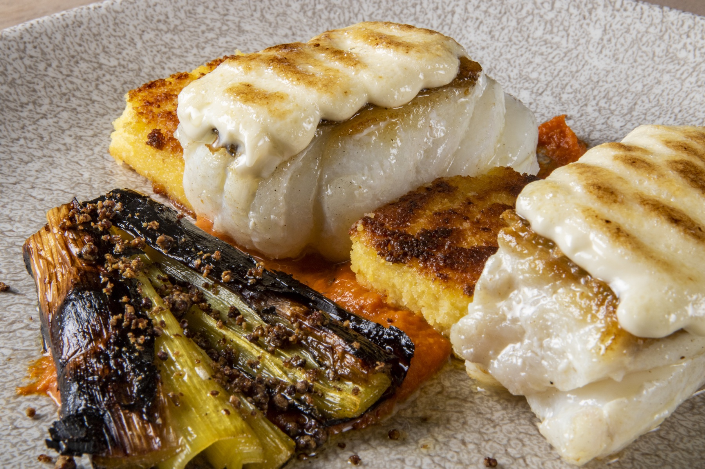

A place to arrive.
Photograph the tents, interiors and welcoming details that help guests understand the comfort and character of each camp.
Photography and film created to bring the experience of your camps to life, from the first light over the landscape to the warmth of a meal shared at camp.
Explore the proposal ↘Help guests and travel partners imagine what it feels like to stay with Embalakai.
I propose a new on-location production centred on your camps: the spaces, hospitality, food and landscapes that make the experience distinctive. Working with your team and local guides, we can create a collection for the journeys and markets you want to develop.
Together, we can decide which camp, experiences and audiences matter most. The final images can be used by your team or become the foundation for a campaign we develop together.
Photograph the tents, interiors and welcoming details that help guests understand the comfort and character of each camp.
Follow a day at camp: meals, time outdoors and the activities your team wants to highlight, always planned with local guidance.
Meet the guides, hosts and cooks who shape the experience, with natural portraits and moments of service.
These photographs are examples of my existing work from other destinations. The images for Embalakai would be created at your camps in Tanzania.



When appropriate and permitted, aerial photography can show the setting and surroundings. Every production is designed around the location, local conditions and your priorities.
I’m Juan Aizpuru, a photographer and filmmaker from Bilbao. I work with a production team and local partners to create imagery for travel and hospitality.
We identify the camp, experiences and audiences you want to reach, then plan the production with your team.
We work with your local staff and guides to photograph and film the spaces and experiences you want to show.
Use the photographs and films in your own communications under an agreed licence, or collaborate with us to develop a complete campaign. Scope and formats are defined together.
I’d love to hear which experiences you want to promote and explore what we could create together for Embalakai.
View Juan’s work ↗